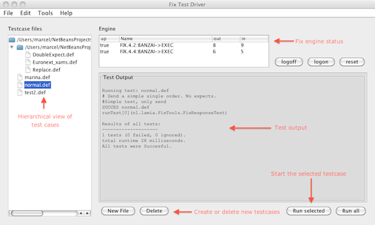

This tool allows you to connect to a number of fix sessions and run predetermined test cases. The test cases are organized in a hierarchical set of folders and can be run individually or recursively by folder. The orders, the messages and the order status are kept in a persistent database so multi day tests are possible.
The tests are run under the open source test framework JUnit4 and the persistence of orders is done using the hsql database. Fix connectivity and data dictionaries are implemented using QuickFixJ. Logging is Log4J, log settings can therefore be managed in the log4j.properties file (in the config directory).

In the main window on the left the test cases are presented in a tree view. Selecting a test case or folder by clicking on it selects and clicking on the run selected button in the lower right runs it. Double clicking a test case opens an editor where the test case can be edited. New test cases can be added with the button labeled New file, the selected test case can be deleted using the button labeled Delete.
At the top of the application the current status for the fix sessions is shown. The selected session can be logged on, off or reset using the buttons. To start any sessions the fix engine needs to be started through the file menu.
Each test case file consists of a number of steps, one per line that are processed in turn. The start of the line determines the type of test step or action. Currently the types available are:
# Testing a replace of a new order based on the originally issued randomized clordid
iCONNECT FIX.4.2:BANZAI->EXEC
RESET Test1
RESET Test1b
I8=FIX.4.2|9=136|35=D|34=40|49=BANZAI|52=20100919-17:36:58.865|56=EXEC|11=<Clordid=Test1>|21=1| 38=100|40=1|54=1|55=LNUX|58=Please deliver !|60=20100919-17:36:58.858|10=085|
E8=FIX.4.2|9=129|35=8|34=407|49=EXEC|52=20100923-22:21:00.081|56=BANZAI|6=0|11=<Test1-[0-9]*>|14=0| 17=793|20=0|37=793|39=0|54=1|55=LNUX|150=2|151=0|10=169|
E8=FIX.4.2|9=156|35=8|34=412|49=EXEC|52=20101207-15:47:29.670|56=BANZAI|6=<.*>|11=<Test1-[0-9]*>| 14=100|17=171|20=0|31=<.*>|32=100|37=171|38=100|39=2|54=1|55=LNUX|150=2|151=0|10=114|
WAIT 1000
I8=FIX.4.2|9=136|35=G|34=40|49=BANZAI|52=20100919-17:36:58.865|56=EXEC|11=<Clordid=Test1b>| 41=<OrigClordid=Test1>|21=1|38=200|40=1|54=1|55=LNUX|58=Please deliver more !|60=20100919-17:36:58.858|10=085|
WAIT 500
E8=FIX.4.2|9=102|35=j|34=259|49=EXEC|52=20100923-20:55:48.018|56=BANZAI|45=163|58=Unsupported Message Type|372=G|380=3|10=235
eDISCONNECT
When using expects the test driver will not be able to distinguish between application level messages intended for the Client order id at hand or others; it will try to match each message (except for heartbeat, resend, etc.) of the correct message type and session id to the next expect line. Incoming fills or acks for other orders might throw it off. For critical sections a small delay may be necessary. All waiting, unconsumed messages are cleared between testcases, but of course market fills could come in during a next test if the order isn't cancelled.
On the Initiate step you may specify a number of variables to customize your message:
The order manager shows all orders it knows about in the upper table. It will keep the status of the orders for most cases, although it is not completely knowledgeable on all possible scenarios. By selecting an order in the upper view, all Fix messages relating to it are shown in the lower table. Double clicking a row in this table will show the message in the Fix dialog, specifying tag, name and data types.
The order manager is also responsible for telling the test driver what client order id was used last time. When an order is replaced or canceled in a test the <OrigClordid=...> tag will get its id from here.
The orders and messages are persisted between runs of the program in a hsqldb database. To purge all orders from the database press the purge button. Selectively deleting entries is done using the RESET action in the test case.
The dictionary Editor allows you to update values for lookups or even add and delete rows. The actual dictionary is a csv file living in the config directory of the tool, products.def. You can prime the dictionary by placing any comma separated file here before starting up the tool. The first row is parsed as the column names and the first column becomes the product id. Please note that any row with more fields than the defined columns will be truncated when the dictionary is edited.
Click save to update the csv file on disk. Do this before running any tests.
productid,symbol,expiry,strike,comment
futAEX,FTI,201011,340,blabla
futFTSE,Z,201011,200,blabla
Test cases can be edited by double clicking their name in the tree view. The simple text editor will let you reload, save or discard your changes.
To more easily edit a Fix message, place your cursor anywhere on the I or E lines with the message and select Edit - Edit FIX msg... Alternatively, select (part of) the FIX message before selecting the menu item. Both ways will open a dialog where the individual tags can be edited. For any recognized tag it will show the name and data types as a guide. You can either update the message in the single line or table views. Adding tags can currently only be done in the top line. When you exit the dialog with ok, the edited portion will be replaced in the file.
The same dialog can be called form the Tools menu in the main window. In this case it won't save anything, but you can use it to inspect messages.
The behaviour of the tests can be adjusted by setting the following options:
These options are active from the next test case run from the program. To make them default save the settings to disk using Edit - Save Settings
New in version 1.28:
New in version 1.29:
I hope you find this tool useful. Any remarks, critiques, suggestions or gossip: p.vrolijk AT gmail.com